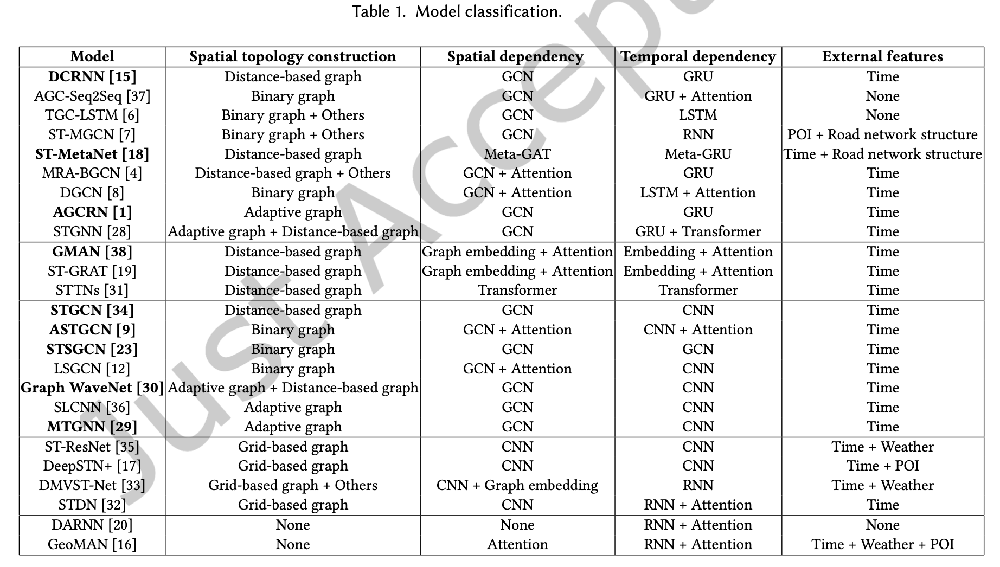
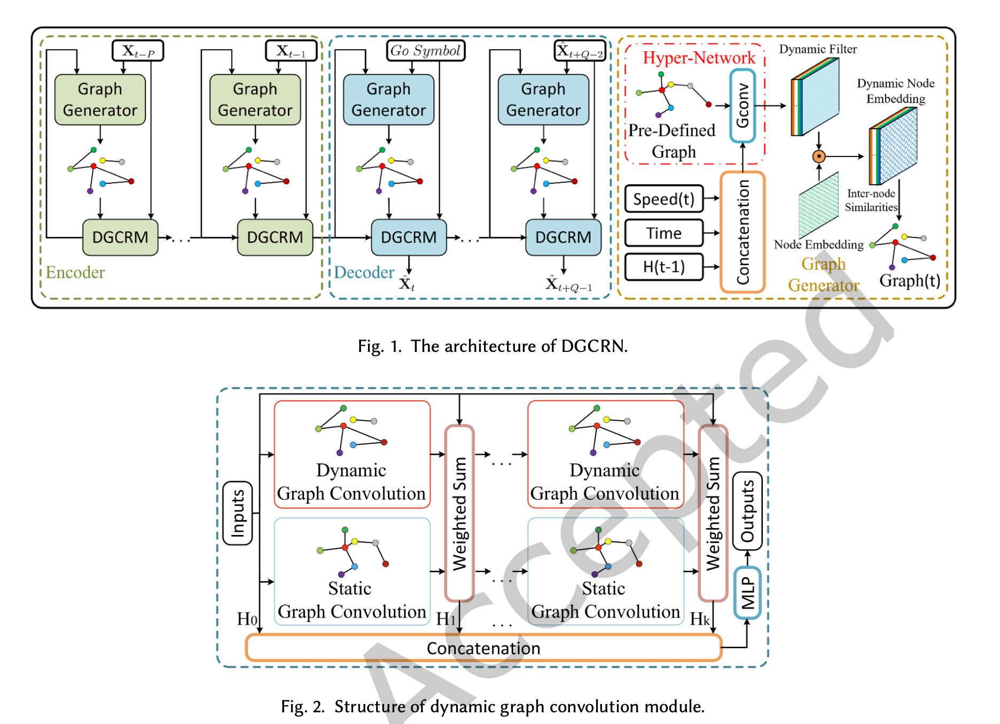

Type
摘要
背景（交通预测的意义）
交通预测是智能交通系统的基础，对于建设智慧城市而言至关重要。
问题陈述（现有时空网络建模方法的不足在于？）
-
忽略路网空间相关性的动态特性
-
基于RNN的方法效率低
-
缺乏公平的比较
方法（本文如何应对目前的挑战？）
提出一个新颖的交通预测框架，名曰DGCRN。新颖之处在：
-
每一个时间步都生成动态的滤波器参数，从节点属性中提取动态特性
-
对节点嵌入进行过滤，并使用他们生成动态图，集成于预定义的静态图中
-
应用一种新的训练策略，提高效率和模型表现。
实验
新模型超越15个基线模型。
引言
背景
（关于社会对智能交通系统的需求、目前实现智能交通的可能性（从数据源和方法两个角度讨论））。
陈述交通预测所面临的挑战
-
捕获时空相关性方面
-
空间依赖性
相似的交通模式会在路网的局部发生。
-
时间依赖性
同一位置的交通状况具有非线性变化模式且具有周期性
-
时空相关性
不同位置间的交互是动态变化的。
-
-
利用地理属性方面
待预测的交通属性是否与道路地理属性有关系？如何更充分利用外部的地理特征？
-
路网距离、节点连通性
-
POI
-
流
-
……
-
-
对不同模型进行公平的评价
引出本文的工作
-
提出新模型
-
应用通用的面向RNN的训练策略
-
开展实验验证新模型的有效性
-
发布新的真实数据集
文献综述
对现有模型进行分类，按空间拓扑构造方式、空间依赖性、时间依赖性建模方法、是否利用外部特征进行分类。

方法

DGCRN包含两个主要模块
-
图生成器
-
动态图卷积循环模块
实验设置
数据集
-
METR-LA
-
PEMS-BAY
-
NE-BJ
“新发布的城市道路数据集，数据源为腾讯地图导航数据。”(PS：实际上还未发布，github上的issue无回复)
对数据集进行统计分析（Pearson相关性分析、速度值分布分析），观察数据集是否能体现出空间关系的存在。